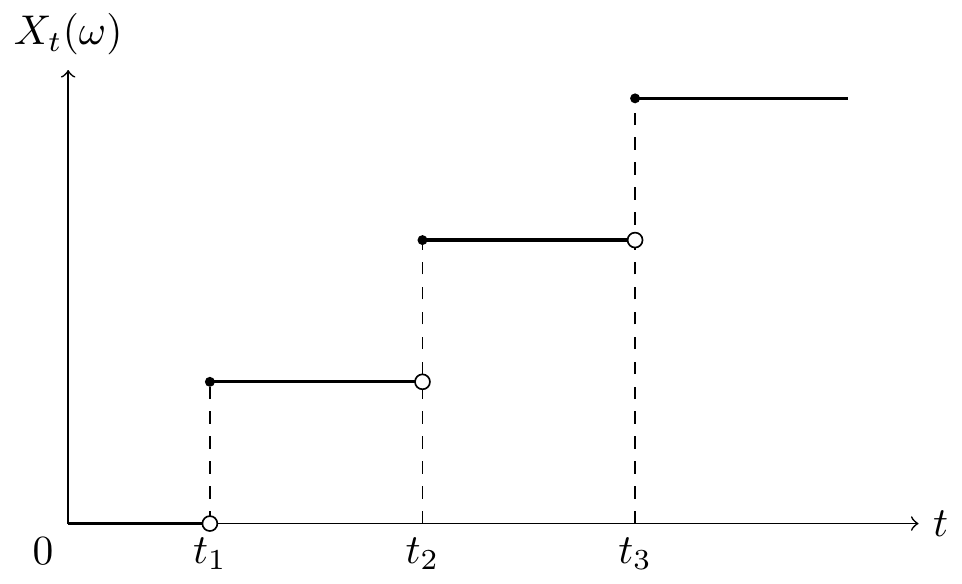
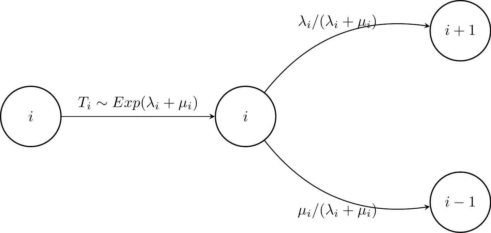

3 Cadeias de Markov em tempo contínuo
Neste capítulo iremos considerar \((X_t, ~ t \in \mathbb{R}_0^+)\) uma C.M. com valores em \(\mathbb{N}_0\) e espaço de parâmetro \(\mathbb{R}_0^+\).
Vamos admitir que \((X_t, ~ t \in \mathbb{R}_0^+)\) é homogénea, isto é, tem probabilidade de transição estacionárias. Nestas condições, a função de probabilidade de transição
\[\forall ~t >0, ~P_{ij}(t)=P(X_{t+n}=j \mid X_n=i), \quad i,j \in \mathbb{N}_0\] é independente de \(n \geq 0\).
3.1 Processo de Poisson homogéneo
O processo de Poisson homogéneo é um processo estocástico que modela a ocorrência de eventos aleatórios ao longo do tempo, onde os eventos ocorrem de forma independente e com uma taxa constante. É frequentemente utilizado para modelar fenómenos como chamadas telefónicas recebidas num call center, chegadas de clientes a um serviço, ou falhas em sistemas, entre outros.
Seja \(X_t\) uma função que conta o número de vezes que um determinado acontecimento ocorre durante o período de tempo de 0 a \(t\). Assim, a aplicação \(t \longrightarrow X_t\) é uma função em escada, não decrescente, em que os saltos correspondem às ocorrências dos acontecimentos:

\(\,\)
Hipótese 3.1 (Postulados do processo de Poisson)
P1. O número de acontecimentos que ocorrem em intervalos de tempo disjuntos são v.a.’s independentes.
P2. A v.a. \(X_{t_0+t}-X_{t_0}\) (isto é, o acréscimo) depende apenas de \(t\) e não de \(t_0\) ou de \(X_{t_0}\).
P3. A probabilidade de ocorrer pelo menos um acontecimento num intervalo de tempo pequeno de amplitude \(h\) é proporcional à amplitude desse intervalo. Assim, \[P(h)=\lambda h + o(h), \quad h \to 0, ~\lambda >0,\] onde \(g(t)=o(t), ~t \to 0, \iff \lim\limits_{t \to 0}\dfrac{g(t)}{t}=0.\)
P4. A probabilidade de ocorrer mais do que um acontecimento num intervalo de tempo pequeno de amplitude \(h\) é negligível quando \(h\) é pequeno. Isto mostra que num intervalo pequeno, ou ocorre um acontecimento, ou não ocorre nenhum, excluindo a possibilidade de ocorrência simultânea de dois ou mais acontecimentos. Assim, \[\sum\limits_{i=2}^{+\infty}P_i(k)=o(h), \quad h \to 0,\] onde \(P_i(k)=P(X_k=i)\).
\(\,\)
Representemos por \(P_n(t)\) a probabilidade de ocorrerem \(n\) acontecimentos no intervalo de tempo \([0,t]\). Assim, num intervlao de amplitude \(t+h\) temos:
- Para \(n=0\): \[\begin{align*} P_0(t+h) &= P_0(t) \cdot P_{0}(h)\\ &= P_0(t) \cdot (1- P(\text{ocorrer mais do que 1 acontecimento}))\\ &= P_0(t) \cdot (1-P(h))\\ &= P_0(t) - P_0(t) \cdot P(h). \end{align*}\]
Temos então que:
\[P_0(t+h) -P_0(t) = - P_0(t) \cdot P(h) \iff \dfrac{P_0(t+h) -P_0(t)}{h} = - P_0(t) \cdot \dfrac{P(h)}{h}.\] Aplicando limites, e tendo em conta o Postulado P3, obtemos:
\[\lim\limits_{h \to 0}\dfrac{P_0(t+h) -P_0(t)}{h} = - P_0(t) \cdot \lim\limits_{h \to 0} \dfrac{P(h)}{h},\] o que resulta em
\[\dfrac{d}{dt}P_0(t) = - P_0(t) \cdot \lim\limits_{h \to 0} \dfrac{\lambda h + o(h)}{h},\] ou seja, \[\dfrac{d}{dt}P_0(t) = - \lambda P_0(t),\] isto é, a probabilidade do acontecimento não se realizar no intervalo de tempo \([0,t]\), \(P_0(t)\), satisfaz a equação diferencial \[\boxed{P^{'}_0(t)=-\lambda P_0(t).}\]
multiplicando pelo fator integrante \(e^{\lambda t}\), a solução desta equação diferencial é, \[P_0(t)=K \cdot e^{-\lambda t},\] onde \(K\) é uma constante de integração. Como \(P_0(0)=1\), temos que \(K=1\). Assim, a solução da equação diferencial é
\[\boxed{P_0(t)=e^{-\lambda t}.}\]
- Para \(n \geq 1\): se no intervalo \([0,t]\) ocorrerm \(n\) eventos, no intervalo \([t,t+h]\) ocorrem zero; se no intervalo \([0,t]\) ocorrerm \(n-1\) eventos, no intervalo \([t,t+h]\) ocorre 1; se no intervalo \([0,t]\) ocorrerm \(n-2\) eventos, no intervalo \([t,t+h]\) ocorrem 2; e assim sucessivamente. Logo,
\[\begin{align*} P_n(t+h) &= P_n(t) \cdot P_{0}(h) + P_{n-1}(t) \cdot P_{1}(h) + P_{n-2}(t) \cdot P_{2}(h) + \dots\\ &= P_n(t) \cdot P_{0}(h) + P_{n-1}(t) \cdot P_{1}(h) + \sum\limits_{i \geq 2}P_{n-i}(t) \cdot P_{i}(h)\\ &= P_n(t) \cdot (1-P(h)) + P_{n-1}(t) \cdot (P(h)+o(h)) + \sum\limits_{i \geq 2}P_{n-i}(t) \cdot P_{i}(h), \end{align*}\] donde se obtém: \[P_n(t+h)-P_n(t)=-P_n(t) \cdot P(h) + P_{n-1}(t) \cdot P(h) + P_{n-1}(t) \cdot o(h) + o(h)+\sum\limits_{i \geq 2}P_{n-i}(t) \cdot P_{i}(h).\] Dividindo por \(h\) e aplicando o limite quando \(h \to 0\), obtemos:
\[\begin{align*} \lim\limits_{h \to 0}\dfrac{P_n(t+h)-P_n(t)}{h} &= -P_n(t) \cdot \lim\limits_{h \to 0} \dfrac{P(h)}{h} + P_{n-1}(t) \cdot \lim\limits_{h \to 0} \dfrac{P(h)}{h} + P_{n-1}(t) \cdot \lim\limits_{h \to 0} \dfrac{o(h)}{h} \\ & + \lim\limits_{h \to 0} \dfrac{o(h)}{h}+\lim\limits_{h \to 0} \dfrac{\sum\limits_{i \geq 2}P_{n-i}(t) \cdot P_{i}(h)}{h}, \end{align*}\] ou seja, \[\dfrac{d}{dt}P_n(t)=-P_n(t) \cdot \lambda + P_{n-1}(t) \cdot \lambda + 0 + 0,\] o que equivale a escrever que a probabilidade do acontecimento se realizar pelo menos uma vez no intervalo \([0,t]\) satisfaz a equação diferencial \[\boxed{P^{'}_n(t)=\lambda P_{n-1}(t) - \lambda P_n(t), \quad n \in \mathbb{N}.}\] A solução desta equação diferencial, tendo em conta que \(P_n(0)=0\), é dada por
\[\boxed{P_n(t)=\dfrac{\lambda^n t^n}{n!} e^{-\lambda t}, \quad n \in \mathbb{N}.}\]
Assim, podemos concluir que a probabilidade de ocorrerem \(n\) acontecimentos no intervalo de tempo \([0,t]\) segue uma distribuição de Poisson com parâmetro \(\lambda t\), ou seja,
\[X_t \sim Po(\lambda t),\] donde \[ P(X_t=n)=P_n(t)=\dfrac{(\lambda t)^n}{n!} e^{-\lambda t}, \quad n \in \mathbb{N}_0. \]
Das propriedades da distribuição de Poisson, sabemos que \(E(X_t)=\lambda t\), o que significa que o número esperado de acontecimenrtos num intervalo de amplitude \(t\) é proporcional à amplitude do intervalo.
No caso \(t=1\), temos que \(E(X_1)=\lambda\), pelo que:
\(\lambda\) representa o número médio de acontecimentos que ocorrem por unidade de tempo;
\(\lambda\) designa a taxa de ocorrência, razão ou intensidade do processo de Poisson homogéneo.
Com base no exposto, podemos definir processo de Poisson homogéneo do seguinte modo:
Definição 3.1 (Processo de Poisson homogéneo) Um processo estocástico \((X_t, ~ t \in \mathbb{R}_0^+)\) é um processo de Poisson homogéneo com taxa \(\lambda >0\) sse:
tem incrementos independentes e estacionários, e \(X_0=0\) q.c. (quase certamente);
\(X_t\) segue uma distribuição de Poisson com parâmetro \(\lambda t\), isto é, \(X_t \sim Po(\lambda t)\), para todo \(t \in \mathbb{R}_0^+\).
\(\,\)
Nota (Observações sobre o processo de Poisson homogéneo).
- Os postulados do processo de Poisson são suficientes para defini-lo e permitem também definir completamente a distribuição do vetor \((X_{t_1},X_{t_2},\dots, X_{t_k})\). Com efeito, por um lado verifica-se \[\forall ~s,t \in \mathbb{R}_0^+: 0 \leq s \leq t, ~X_t-X_s \sim Po(\lambda(t-s)),\] isto é, o número de acontecimentos que ocorrem num certo intervalo só depende da amplitude desse intervalo: \[\begin{align*} X_t-X_s & ~ {\buildrel d \over =} ~ X_{t-s+s}-X_s\\ & ~ {\buildrel d \over =} ~ X_{t-s}-X_0\\ & ~ {\buildrel d \over =} ~ X_{t-s}\\ & = ~ Po(\lambda(t-s)). \end{align*}\] Por outro lado, como os incrementos são independentes, temos que, para \(t_1 < t_2 < \dots < t_k\):
\[\begin{align*} P(X_{t_1}=n_1, \dots, X_{t_k}=n_k) & = P(X_{t_1}=n_1, \dots, X_{t_k}-X_{k_1}=n_k-n_{k-1})\\ & = P(X_{t_1}=n_1) \cdots P(X_{t_k}-X_{t_{k-1}}=n_k-n_{k-1})\\ & = \dfrac{(\lambda t_1)^{n_1}}{n_1!} e^{-\lambda t_1} \cdots \dfrac{(\lambda(t_k-t_{k-1}))^{n_k-n_{k-1}}}{(n_k-n_{k-1})!} e^{-\lambda(t_k-t_{k-1})}. \end{align*}\]
- Ligada à v.a. \(X_t\) costuma definir-se ainda a v.a. \(L\) que representa o tempo de espera até ao primeiro acontecimento, isto é, \(L=\inf\{t \in \mathbb{R}_0^+: X_t>0\}\). A v.a. \(L\) segue uma distribuição exponencial com parâmetro \(\lambda\), ou seja, \(L \sim Exp(\lambda)\). Vejamos:
- \(F_L(t)=P(L \leq t)=1-P(L>t)=1-P(X_t=0)=1-P_0(t)=1-e^{-\lambda t}\).
- \(f_L(t)=\lambda e^{-\lambda t}, \quad t>0.\)
- \(E(L)=1/\lambda\).
- \(Var(L)=1/\lambda^2\).
- \(M_L(t)=\dfrac{\lambda}{\lambda-t}, ~t< \lambda\). (f.g.m.).
Considere-se a seguinte v.a.: \[S_r=\text{ tempo de espera até à ocorrência do } r\text{-ésimo acontecimento},\] isto é, \[S_r=X_1+X_2+\dots+X_r, \quad X_i \text{ i.i.d.},\] onde \(X_i\) representa o tempo de espera desde o \((i-1)-\)ésimo acontecimento até ocorrer o acontecimento de ordem \(i\). Assim, \(X_i \sim Exp(\lambda), ~\forall ~i =1, \dots,r.\) Assim, calculando a f.g.m. de \(S_r\), e relacionando com a f.g.m. de \(X_i\) vem: \[ M_{S_r}(t)=\prod\limits_{i=1}^{r}M_{X_i}(t)=(M_{X_i}(t))^r=\left(\dfrac{\lambda}{\lambda-t}\right)^r, ~t< \lambda, \] ou seja, trata-se da f.g.m. de uma v.a. com distribuição Gamma com parâmetros \(r\) e \(\lambda\), ou seja, \(S_r \sim \Gamma(r,\lambda)\), donde se obtém, \[E(S_r)=r/\lambda \quad { e } \quad Var(S_r)=r/\lambda^2.\]
O processo de Poisson é uma cadeia de Markov em tempo contínuo homogénea, isto é, \(\forall ~k_1,k_2,\dots,k_n,k \in \mathbb{N}_0, ~\forall ~t_1,t_2,\dots,t_n \in \mathbb{R}_0^+, ~t_1 \leq t_2 \leq \dots \leq t_n \leq t\): \[P(X_{t}=k \mid X_{t_1}=k_1, \dots,X_{t_n}=k_n)=P(X_t=k \mid X_{t_n}=k_n)=P_{k_nk}(t-t_n).\]
Pelo exposto, podemos dar uma outra definição de processo de Poisson:
Definição 3.2 (Processo de Poisson homogéneo) Se \((X_t, ~ t \in \mathbb{R}_0^+)\) é um processo de Poisson homogéneo com taxa \(\lambda >0\), então \((X_t, ~ t \in \mathbb{R}_0^+)\) é uma cadeia de Markov com valores em \(\mathbb{N}_0\), tal que:
\(P(X_{t+h}-X_t=1 \mid X_{t}=x)=\lambda h + o(h), ~x \in \mathbb{N}_0\), quando \(h \to 0\).
\(P(X_{t+h}-X_t=0 \mid X_{t}=x)=1-\lambda h + o(h), ~x \in \mathbb{N}_0\), quando \(h \to 0\).
\(X_0=0\) q.c.
\(\,\)
Existem cadeias de Markov mais gerais e que nos permitem descrever fenómenos análogos aos descritos pelos processos de Poisson. É o que veremos nas secções seguintes.
\(\,\)
Exercício 3.1
Seja \(X=(X_t: ~t \geq 0)\) um PE real tal que \(X_0=0\) q.c. e \(X_t \sim Po(\cdot)\).
Em que condições será \(X\) um processo de Poisson?
Supondo que \(X\) é um processo de Poisson, prove que \(\forall ~t,s,h \in \mathbb{R}_0^+\), com \(t>s>h\), e \(\forall ~x,y \in \mathbb{N}_0\): \[P(X_t-X_s=x, X_s-X_h=y)=\dfrac{e^{-\lambda (t-h)} \lambda^{x+y} (t-s)^x (s-h)^y}{x!y!}.\]
\(\,\)
Exercício 3.2
Considere uma estação de serviço de lavagem de automóveis na qual apenas um carro é atendido de cada vez e segundo a ordem de chegada. Um estudo realizado pela empresa permitiu concluir que as chegadas dos automóveis ocorrem segundo um processo de Poisson com intensidade média de 15 carros por hora. Designe por \(N_t,~t \geq 0\), o número de automóveis que chegam num intervalo de tempo de amplitude \(t\) minutos.
Identifique a distribuição de \(N_t, ~ \forall ~t \geq 0\). Justifique a sua resposta.
Mostre que \[\lim\limits_{h \to 0} \dfrac{P(N_h \geq 2)}{P(N_h =1)}=0.\]
Prove que a condição expressa na alínea anterior é equivalente a \[\lim\limits_{h \to 0} P(N_h >1 \mid N_h \geq 1 )=0.\] O que pode concluir sobre o processo em causa?
Qual o tempo médio de espera entre duas chegadas consecutivas?
\(\,\)
Exercício 3.3
Seja \((N_t, ~ t \geq 0)\) um processo de Poisson de intensidade \(\lambda >0\).
- Supondo que \(s<t\), calcule:
\(E(N_t-N_s)\).
\(Var(N_t-N_s)\).
\(Cov(N_t,N_s)\).
- Os Clientes de um vendedor de jornais chegam segundo um processo de Poisson a uma velocidade média de 2 Clientes por minuto.
Determine a probabilidade de não chegarem Clientes nos próximos três minutos sabendo que chegaram um ou mais Clientes nos últimos cinco minutos.
O vendedor costuma fazer a seguinte aposta: paga ao seu assistente um euro se o próximo Cliente não chegar dentro de um minuto, caso contrário o assitente paga-lhe um euro. Qual o valor que o vendedor espera ganhar?
\(\,\)
Exercício 3.4
O volume de vendas de um determinado produto constitui um processo de Poisson, com um volume médio de vendas de 4 unidades por dia.
Qual é a probabilidade de que, em dois dias, se vendam exatamente 6 unidades?
Qual é a probabilidade de que, em dois dias, se vendam mais de 6 unidades?
Determine o volume médio de vendas semanal.
Qual é a probabilidade de que um stock de 4 unidades dure menos de um dia?
\(\,\)
Exercício 3.5
Numa loja os clientes chegam de acordo com uma lei de Poisson à média de 30 por hora. Qual a probabilidade de que o intervalo de tempo entre chegadas sucessivas seja:
Superior a 2 minutos?
Inferior a 4 minutos?
Entre 1 e 3 minutos?
\(\,\)
Exercício 3.6
Uma v.a. \(T\) diz-se sem memória sse: \[ P(T>x+y \mid T>x)=P(T>y),\;\;\;\forall \;x,y>0. \] Mostre que:
Se \(T\) for uma v.a. contínua, \(T\) é sem memória sse \(T\) for distribuída exponencialmente.
Se \(T\) tomar apenas valores inteiros e positivos, \(T\) é sem memória para \(x\) e \(y\) não negativos sse existe uma constante \(p\) tal que: \[ P(T=k)=p(1-p)^{k-1},\;\;\;k=1,2,3,\cdots . \]
\(\,\)
Exercício 3.7
A chegada de passageiros a uma paragem de autocarro segue um processo de Poisson com intensidade \(\lambda\). Suponha que um autocarro partiu no instante \(t=0\), não tendo deixado nenhum passageiro em espera. Seja \(T\) o tempo de chegada do autocarro seguinte. Então, o número de pessoas na paragem aquando da sua chegada é \(N(T)\). Suponha que o tempo de chegada \(T\) é independente do processo de Poisson e que \(T\) tem distribuição uniforme no intervalo \((1,2)\).
Calcule a média e a variância de \(N(T)\).
\(\,\)
Exercício 3.8
Sejam \((N_t, ~t\geq 0)\) um processo de Poisson com intensidade \(\lambda\) e \(P_{k}(t)=P(N_t=k), ~k=0,1,2,\dots\).
Deduza as equações diferenciais: \[\begin{eqnarray*} P_{0}^{\prime }(t) &=&-\lambda P_{0}(t) \\ P_{k}^{\prime }(t) &=&-\lambda P_{k}(t)+\lambda P_{k-1}(t)\, ,% ~ k=1,2,\cdots \end{eqnarray*}\]
Encontre a partir das equações acima a função de probabilidade: \[ P_{k}(t)=\frac{(\lambda t)^{k}}{k!}e^{-\lambda t} , \,k=0,1,2,\dots \]
3.2 Processo de nascimento puro
Considere-se uma sucessão de números positivos \(\{\lambda_k, ~k \in \mathbb{N}_0\}\).
Definição 3.3 (Processo de nascimento puro) Um processo estocástico \((X_t, ~ t \in \mathbb{R}_0^+)\), com valores em \(\mathbb{N}_0\), é um processo de nascimento puro com taxa (ou razão de nascimento) \(\{\lambda_k, ~k \in \mathbb{N}_0\}\) se é uma cadeia de markov em tempo contínuo homogénena, satisfazendo os axiomas:
\(P(X_{t+h}-X_t=1 \mid X_{t}=k)=\lambda_k h + o_{1,k}(h)=P_{k,k+1}(h)\).
\(P(X_{t+h}-X_t=0 \mid X_{t}=k)=1-\lambda_k h + o_{2,k}(h)=P_{k,k}(h)\).
\(P(X_{t+h}-X_t < 0 \mid X_{t}=k)=0, ~ k \in \mathbb{N}_0\), quando \(h \to 0\).
\(X_0=0\) q.c.
\(\,\)
Nota.
A condição (iv) é admita por conveniência.
\(X_t\) não representa o tamanho da população mas o número de nascimentos no intervalo \([0,t]\).
Uma vez que as probabilidades de transição dadas por (i) e (ii) são estacionárias, então \(o_{1,k}(h)\) e \(o_{2,k}(h)\) não dependem de \(t\).
O processo de nascimento puro é uma generalização do processo de Poisson homogéneo, onde a probabilidade de um acontecimento ocorrer num certo instante depende do número de acontecimentos que já ocorreram. Assim, o processo de Poisson é um processo de nascimento puro de rezão de nascimento constante e igual \(\lambda\).
\(\,\)
Considere-se agora \[P_n(t)=P(X_t=n),\] e atente-se ao Teorema seguinte:
Teorema 3.1 \(P_n(t)\) satisfaz, para \(t \geq 0\), o sistema de equações diferenciais \[ \begin{cases} P^{\prime}_0(t)=-\lambda_0 P_0(t), \\ P^{\prime}_n(t)=\lambda_{n-1} P_{n-1}(t) - \lambda_n P_n(t), ~ n \geq 1 \end{cases}, \] com as condições fronteira \[ \begin{cases} P_0(0)=P(X_0=0)=1, \\ P_n(0)=P(X_0=n)=0, ~ n >0.\\ \end{cases} \] Adicionalmente,
\[P_0(t)=P(X_t=0)=e^{\lambda_0 t}.\]
\(\,\)
Consideremos agora a v.a. \[T_k= \text{ tempo compreendido entre o instante } k \text{ e o } k+1-\text{ésimo nascimentos consecutivos},\] isto é \[T_k= \text{ tempo de espera entre nascimentos consecutivos}.\]
Tem-se que \[P_n(t)=P(X_t=n)=P\left(\sum\limits_{i=0}^{n-1}T_i \leq t \leq \sum\limits_{i=0}^{n}T_i\right).\] Considere-se \[S_k=\sum\limits_{i=0}^{k-1}T_i,\] o tempo durante o qual ocorrem \(k\) nascimentos. Como se viu anteriormente, \[\forall z >0, ~P(T_0 \leq z)= 1-P(X_z=0)=1-e^{-\lambda_0 z},\] isto é, \[T_0 \sim Exp(\lambda_0).\]
É possivel provar (ver Karlin & Taylor, por exemplo) que \((T_k, ~ k \in \mathbb{N}_0)\) é uma sucessão de v.a.’s independentes, tais que, para cada \(k \in \mathbb{N}_0\), \(T_k \sim Exp(\lambda_k)\).
Adicionalmente, se \((X_t, t \geq 0)\) é um processo de Poisson, então \(S_n\) segue uma distribuição Gamma com parâmetros \(n\) e \(\lambda\), ou seja, \(S_n \sim \Gamma(n,\lambda)\), onde \(\lambda\) é a taxa do processo de Poisson.
Terminamos esta secção com o seguinte Teorema:
Teorema 3.2 \(P_k(t)\) verifica a equação de recorrência \[P_k(t)=\lambda_{k-1} e^{-\lambda_k t}\int\limits_{0}^{1}e^{\lambda_k x}P_{k-1}(x) \, dx, \quad k \in \mathbb{N}.\]
\(\,\)
Exercício 3.9
Com vista ao bom funcionamento de determinado consultório médico, a direção determinou que em cada instante, do período de funcionamento do mesmo, não poderia existir no consultório mais do que \(N\) doentes. Apenas um doente é atendido de cada vez e segundo a respetiva ordem de chegada. Os doentes chegam ao consultório segundo um processo de Poisson de intensidade \(1/2\), ficando a aguardar a sua vez de atendimento apenas se nesse momento o número de utentes no consultório for inferior a \(N\). As consultas são concluídas segundo um processo de Poisson de intensidade \(1/3\).
- Designe por \(N_t, ~t \geq 0\), o número de doentes que chegam num intervalo de amplitude \(t\).
Prove que:
\((N_t, ~t \geq 0)\) é uma C.M. de tempo contínuo homogénea e indica a respetiva probabilidade de transição.
\((N_t, ~t \geq 0)\) é um processo de nascimento puro.
Sendo \(T\) uma v.a. que representa o tempo de espera entre duas chegadas consecutivas, prove que \[P(T > t)=e^{-t/2}, \quad t > 0.\]
Qual o tempo médio de espera entre chegadas?
- Seja agora \(X_t, ~t \geq 0\), o número total de doentes no consultório no instante \(t\) Supondo que: \[\forall ~k \in \{0,1,2,\dots,N\}: ~P(X_t=k)=\big(\dfrac{3}{2}\big)^k P(X_t=0),\] determine:
a probabilidade de que existam \(k\) doentes à espera de serem atendidos, num qualquer instante \(t\).
o número médio de doentes no consultório, num qualquer instante \(t\).
\(\,\)
Exercício 3.10
Considere um quiosque no qual os Clientes chegam de acordo com um processo de Poisson à razão de 32 Clientes por dia, durante o horário diário de abertura do quiosque (o qual corresponde a 8 horas). Designe por \(N_t, ~t \geq 0\), o número de Clientes que chegam ao quiosque num intervalo de tempo de amplitude \(t\) horas.
Identifique, justificando, a distribuição de \(N_t\).
Sendo \(T_2\) a v.a. que representa o instante de chegada (em horas) do segundo Cliente ao quiosque, em cada dia, mostre que: \[P(T_2>t)=e^{-4t}(1+4t), \quad t>0.\]
\(\,\)
Exercício 3.11
Uma população de organismos evolui da forma seguinte: cada organismo existe independentemente dos outros, e vive durante determinado tempo, aleatório, com distribuição exponencial de parâmetro \(\theta\), dividindo-se então em dois novos organismos. Por sua vez, a sua existência é também independente dos outros organismos e têm um tempo de vida exponencialmente distribuído de parâmetro \(\theta\), e assim sucessivamente.
Seja \(X(t)\) o número de organismos existentes no instante \(t\). Suponha que \(X(0) = 1\) e defina \(P_n(t) = P(X(t) = n)\). Justifique que \(X(t)\) é um processo de nascimento puro, ou seja, verifica \[ P_n'(t) = -\theta \left( n\,P_n(t) - (n-1)\,P_{n-1}(t) \right), \quad n = 1,2,\ldots \]
\(\,\)
Exercício 3.12
Considere uma população de dimensão \(N(t)\) no instante \(t\) tal que \(N(0) = 1\). Admita que qualquer dos membros desta população se divide em dois novos membros no intervalo \([t, t+h]\) com probabilidade \(\lambda h + o(h)\) ou mantém-se inalterado neste intervalo com probabilidade \(1 - \lambda h + o(h)\).
Prove que \((N(t), ~ t \geq 0)\) é um processo de nascimento puro com taxa de natalidade \(\lambda_n = n \lambda\), para todo o \(n = 1, 2, \cdots\).
Designe por \(p_k(t) = P(N(t) = k)\), com \(k = 1, 2, \cdots\) e prove que: \[ p_k'(t) = (k-1)\lambda\, p_{k-1}(t) - k\lambda\, p_k(t), \quad k = 1,2,\cdots. \]
Tendo em conta a equação diferencial anterior, conclua por indução que: \[ p_k(t) = e^{-k\lambda t} \left( e^{\lambda t} - 1 \right)^{k-1}, \quad k = 1,2,\cdots. \]
Seja \(P(z,t) = \sum\limits_{k=1}^{\infty} z^k p_k(t)\) a função geradora das probabilidades \(p_k(t)\). Prove que: \[ P(z,t) = \frac{z e^{-\lambda t}}{1 - z + z e^{-\lambda t}}. \]
Calcule \(E(N(t))\).
\(\,\)
Exercício 3.13
Seja \((N(t), ~t \geq 0)\) um processo de nascimento puro com \(N(0) = I\) e taxa de natalidade \(\lambda_n = n \lambda\), sendo \(I\) um inteiro positivo. Designe por \(P_n(t) = P(N(t) = n)\).
Prove que: \[\begin{align*} P_I'(t) &= -I\lambda\, P_I(t) \\ P_n'(t) &= -n\lambda\, P_n(t) + (n-1)\lambda\, P_{n-1}(t), \quad n = I+1, I+2, \ldots \end{align*}\]
Prove que: \[ P_k(t) = \binom{k-1}{I-1} e^{-I\lambda t} \left( 1 - e^{-\lambda t} \right)^{k - I}, \quad k \geq I. \]
3.3 Processo de nascimento e morte
3.3.1 Definição e equações de Chapman-Kolmogorov
Definição 3.4 (Processo de nascimento e morte) Um processo estocástico \((X_t, ~ t \in \mathbb{R}_0^+)\), com valores em \(\mathbb{N}_0\), é um processo de nascimento e morte com taxas \(\{\lambda_k, ~k \in \mathbb{N}_0\}\) e \(\{\mu_k, ~k \in \mathbb{N}_0\}\) se é uma cadeia de markov em tempo contínuo homogénea, satisfazendo os axiomas:
\(P_{i,i+1}(h)=P(X_{t+h}=i+1 \mid X_{t}=i)=\lambda_i h + o(h), ~i \geq 0\),
\(P_{i,i-1}(h)=P(X_{t+h}=i-1 \mid X_{t}=i)=\mu_i h + o(h), ~i \geq 1\),
\(P_{i,i}(h)=P(X_{t+h}=i \mid X_{t}=i)=1-(\lambda_i+\mu_i) h + o(h), ~ i \geq 0\),
\(P_{i,j}(0)=P(X_{t}=j \mid X_{t}=i)=\delta_{ij}\),
\(\mu_0=0, ~\lambda_0 >0, ~\mu_i, ~\lambda_i>0, ~i \in \mathbb{N}\),
onde \(o(h)\), em cada caso, pode depender de \(i\) e considera-se que \(o(h) \to 0\) quando \(h \to 0\).
Quando ocorre um nascimento o processo passa do estado \(E_k\) para o estado \(E_{k+1}\) e, quando ocorre uma morte, o processo passa do estado \(E_k\) para o estado \(E_{k-1}\). Assim, o processo de nascimento e morte é um processo de nascimento puro com a adição de mortes.
\(\,\)
Nota. Uma das generalizações óbvias dos processos de nascimento puro considerados consiste em permitir que \(X_t\) decresça, por exemplo através da morte dos seus memebros. Assim, se no instante \(t=0\) o processo está no estado \(n\) ele poderá mudar-se para os estados vizinhos \(n+1\) ou \(n-1\) após um tempo de espera aleatório. Um processo de nascimento e morte pode assim ser interpretado como um passeio aleatório de tempo contínuo.
\(\,\)
Num processo de nascimento e morte (com espaço de estados \(\mathbb{N}_0\)) observa-se, \(\forall ~t\in\mathbb{R}_0^+\) e \(\forall ~ i,j\in\mathbb{N}_0\):
\(P_{ij}(t) \geq 0\), ou seja, as probabilidades de transição são não negativas para quaisquer pares \((i,j)\) e qualquer tempo \(t\). Note-se que, em particular, \(P_{ij}(0)=\delta_{ij}\), onde \(\delta_{ij}\) é o símbolo de Kronecker, i.e., \(\delta_{ij}=1\) se \(i=j\) e \(\delta_{ij}=0\) se \(i \neq j\);
\(\displaystyle \sum_{j=0}^{\infty} P_{ij}(t)=1\), ou seja, a soma das probabilidades de transição a partir do estado \(i\) para todos os estados possíveis é igual a 1, para qualquer tempo \(t\);
As probabilidades de transição são dadas por: \(\forall ~s,t, \in \mathbb{R}_0^+\), \[\begin{align*} P_{ij}(t+s) &= P(X_{n+t+s}=j \mid X_n=i) \\ &= \sum\limits_{k=0}^{+\infty} P(X_{n+t+s}=j, X_{n+t}=k \mid X_n=i) \\ &= \sum\limits_{k=0}^{+\infty} P(X_{n+t+s}=j \mid X_{n+t}=k, X_n=i) \cdot P(X_{n+t}=k \mid X_n=i) \\ &= \sum\limits_{k=0}^{+\infty} P(X_{n+t+s}=j \mid X_{n+t}=k) \cdot P(X_{n+t}=k \mid X_n=i) \\ &= \sum\limits_{k=0}^{+\infty} P_{kj}(s) \cdot P_{ik}(t). \end{align*}\]
Temos então as Equações de Chapmnan-Kolmogorov: \[\begin{equation} \tag{3.1} \boxed{P_{ij}(t+s)=\sum\limits_{k=0}^{+\infty} P_{kj}(s) P_{ik}(t).} \end{equation}\]
Nesta dedução, em cada igualdade, utilizamos, respetivamente, as seguintes justificações:
Definição da probabilidade de transição do estado \(i\) para o estado \(j\) em \(t+s\) passos, a partir do instante \(n\).
Aplicação da regra da probabilidade total, ao considerar todos os possíveis estados \(k\) em que a cadeia pode estar no instante intermédio \(n+t\).
Aplicação da regra do produto das probabilidades condicionadas.
Aplicação da propriedade de Markov, que garante que o futuro (a partir de \(n+t\)) depende apenas do estado atual \(X_{n+t}=k\), e não do passado \(X_n=i\).
Finalmente, identificamos as probabilidades de transição: \[P_{kj}(s) = P(X_{n+t+s}=j \mid X_{n+t}=k) \text{ e } P_{ik}(t) = P(X_{n+t}=k \mid X_n=i).\]
\(\,\)
As probabilidades de transição e as leis marginais caracterizam a distribuição do processo. As distribuições marginais dependem apenas da distribuição inicial e das probabilidades de transição. Assim, se \[q_i:=P(X_0=i), ~i \in \mathbb{N}_0,\] tem-se, \(\forall ~n \in \mathbb{N}_0\), \[\begin{align*} P(X_t=n) &= \sum\limits_{i=0}^{+\infty} P(X_{t}=n, X_{0}=i) \\ &= \sum\limits_{i=0}^{+\infty} P(X_{0}=i) \cdot P(X_{t}=n \mid X_{0}=i) \\ &= \sum\limits_{k=0}^{+\infty} P_{in}(t) \cdot q_i. \\ \end{align*}\] Assim, as distribuições marginais do processo de nascimento e morte são dadas por \[\boxed{P(X_t=n)=\sum\limits_{i=0}^{+\infty} P_{in}(t) q_i, ~n \in \mathbb{N}_0.}\]
3.3.2 Tempo de espera
Considere-se agora a v.a.
\[T_i=\text{tempo de espera de } X_t \text{ no estado } i.\]
É possível mostrar (Karlin & Taylor, por exemplo) que, quando \(h \to 0\),
\[P(T_i \geq t+h)=P(T_i \geq t) \cdot P(T_i \geq h).\]
Podemos ainda escrever a igualdade anterior do seguinte modo
\[\begin{align*} P(T_i \geq t+h) &= P(T_i \geq t) \cdot P(T_i \geq h) \\ &= P(T_i \geq t) \cdot P(X_{n+h}=i, X_{s+n}=i \mid X_n=i), \quad \forall ~s \in [0,h] \\ &= P(T_i \geq t) \cdot (P_{ii}(h) + o(h))\\ &= P(T_i \geq t) \cdot (1-(\lambda_i+\mu_i)h + o(h))\\ &= P(T_i \geq t) \cdot (1-(\lambda_i+\mu_i))+ o(h).\\ \end{align*}\]
Designando por \(G_i(t)=P(T_i \geq t)\), obtemos
\[G_i(t+h)=G_i(t) \cdot (1-(\lambda_i+\mu_i)h) + o(h),\]
donde, dividindo por \(h\) e aplicando o limite quando \(h \to 0\), obtemos
\[\dfrac{d}{dt}G_i(t) = -(\lambda_i+\mu_i) G_i(t),\]
pelo que,
\[G_i(t) = \exp\{-(\lambda_i+\mu_i)t\} = 1-(1-\exp\{-(\lambda_i+\mu_i)t\}),\]
isto é,
\[P(T_i \geq t)=1-\exp\{-(\lambda_i+\mu_i)t\}, \quad t \geq 0,\]
ou seja,
\[\boxed{T_i \sim Exp(\lambda_i+\mu_i),}\]
e o tempo médio de espera é dado por
\[\dfrac{1}{\lambda_i+\mu_i}.\]
\(\,\)
Nota. A descrição do movimento de \(X_t\) descreve-se a seguir. O processo permanece num certo estado \(i\) por um tempo aleatótio \(T_i\) seguindo uma distribuição exponencial de parâmetro \(\lambda_i+\mu_i\). Quando deixa o estado \(i\), o processo ou entra no estdo \(i+1\) ou \(i-1\):
a probabilidade de que a transição seja para \(i+1\) é dada por \(\lambda_i/(\lambda_i+\mu_i)\);
a probabilidade de que a transição seja para \(i-1\) é dada por \(\mu_i/(\lambda_i+\mu_i)\).
Esquematicamente, temos:

Uma possível realização de \(X_t\) é: \[i \longrightarrow i+1 \longrightarrow i \longrightarrow i-1 \longrightarrow \dots\]
O movimento é análogo ao do caminho aleatório, com a diferença de que o tempo de espera em cada estado é uma v.a. com distribuição exponencial.
3.3.3 Equações diferenciais de processos de nascimento e morte
As equações de Chapman-Kolmogorov descrevem a evolução das probabilidades de transição ao longo do tempo. A partir destas equações, podemos deduzir as equações diferenciais que descrevem a evolução das probabilidades de transição em função do tempo.
\(\,\)
Pela relação (3.1), temos:
\[\begin{align*} P_{ij}(t+h) &= \sum_{k=0}^{+\infty} P_{ik}(h) \cdot P_{kj}(t) \\ &= P_{ii}(h) \cdot P_{ij}(t) + P_{i,i+1}(h) \cdot P_{i+1,j}(t) + P_{i,i-1}(h) \cdot P_{i-1,j}(t) + \sum_{k \notin \{i-1,i,i+1\}} P_{ik}(h) \cdot P_{kj}(t) \\ &= \left(1 - (\lambda_i + \mu_i) h\right) P_{ij}(t) + \lambda_i h \cdot P_{i+1,j}(t) + \mu_i h \cdot P_{i-1,j}(t) + o(h), \end{align*}\]
assumindo que o processo é de saltos de primeiro vizinho, isto é, que \(P_{ik}(h) = o(h)\) para \(|k - i| \geq 2\).
Dividindo por \(h\) e aplicando o limite quando \(h \to 0\), obtemos:
\[\begin{equation*} \boxed{ P'_{ij}(t) = \lambda_i P_{i+1,j}(t) + \mu_i P_{i-1,j}(t) - (\lambda_i + \mu_i) P_{ij}(t), \quad i \geq 1. } \end{equation*}\]
Para \(i = 0\), temos:
\[\begin{align*} P_{0j}(t+h) &= P_{00}(h) \cdot P_{0j}(t) + P_{0,1}(h) \cdot P_{1j}(t) + \sum_{k \geq 2} P_{0k}(h) \cdot P_{kj}(t) \\ &= \left(1 - \lambda_0 h\right) P_{0j}(t) + \lambda_0 h \cdot P_{1j}(t) + o(h), \end{align*}\]
donde se obtém:
\[\begin{equation*} \boxed{ P'_{0j}(t) = \lambda_0 P_{1j}(t) - \lambda_0 P_{0j}(t). } \end{equation*}\]
Estas equações designam-se por Equações de Kolmogorov de atraso, e descrevem como a probabilidade de transição evolui em função do estado inicial \(i\).
As condições iniciais associadas são: \[ P_{ij}(0) = \delta_{ij}, \quad i,j \in \mathbb{N}_0, \] onde \(\delta_{ij}\) representa o delta de Kronecker.
\(\,\)
Por outro lado, a equação de Chapman-Kolmogorov (3.1) também pode ser escrita na forma:
\[\begin{align*} P_{ij}(t+h) &= \sum_{k=0}^{+\infty} P_{ik}(t) \cdot P_{kj}(h) \\ &= P_{ij}(t) \cdot P_{jj}(h) + P_{i,j+1}(t) \cdot P_{j+1,j}(h) + P_{i,j-1}(t) \cdot P_{j-1,j}(h) + \sum_{k \notin \{j-1,j,j+1\}} P_{ik}(t) \cdot P_{kj}(h) \\ &= \left(1 - (\lambda_j + \mu_j) h \right) P_{ij}(t) + \lambda_{j-1} h \cdot P_{i,j-1}(t) + \mu_{j+1} h \cdot P_{i,j+1}(t) + o(h), \end{align*}\]
assumindo, tal como anteriormente, que os saltos ocorrem apenas entre estados vizinhos.
Dividindo por \(h\) e aplicando o limite \(h \to 0\), obtemos:
\[\begin{equation*} \boxed{ P'_{ij}(t) = \lambda_{j-1} P_{i,j-1}(t) + \mu_{j+1} P_{i,j+1}(t) - (\lambda_j + \mu_j) P_{ij}(t), \quad j \geq 1. } \end{equation*}\]
Para \(j = 0\), temos:
\[\begin{equation*} \boxed{ P'_{i0}(t) = \mu_1 P_{i1}(t) - \lambda_0 P_{i0}(t). } \end{equation*}\]
Estas equações designam-se por Equações de Kolmogorov de avanço, e descrevem como a probabilidade de transição evolui em função do estado final \(j\).
\(\,\)
Vejamos agora se o comportamento de \(P_{ij}(t)\) estabiliza à medida que \(t \to +\infty\).
É possível demonstrar (ver, por exemplo, Karlin & Taylor) que, sob condições adequadas (recorrência positiva e aperiocidade), as probabilidades de transição convergem para um valor limite, isto é:
\[ \lim_{t \to +\infty} P_{ij}(t) = \pi_j, \] onde \(\pi_j\) é a probabilidade de que o sistema se encontre no estado \(j\) em regime estacionário, independentemente do estado inicial \(i\).
Por outras palavras, \(\pi_j\) representa a probabilidade limite de que o sistema se encontre no estado \(j\), num instante arbitrário no futuro.
\(\,\)
Neste caso, as equações de Kolmogorov de atraso (ou avanço) convergem para um sistema de equações algébricas conhecidas como Equações de Kolmogorov estacionárias, que descrevem o comportamento assintótico do processo de nascimento e morte:
\[ \boxed{ \begin{cases} \lambda_0 \pi_1 - \lambda_0 \pi_0 = 0, & j = 0, \\ \lambda_{j-1} \pi_{j-1} + \mu_{j+1} \pi_{j+1} - (\lambda_j + \mu_j) \pi_j = 0, & j \geq 1. \end{cases}} \]
Estas equações, a par da condição de normalização \[ \sum_{j=0}^{\infty} \pi_j = 1, \] permitem determinar a distribuição de probabilidade estacionária \((\pi_j)_{j \in \mathbb{N}_0}\).
\(\,\)
Exercício 3.14
Considere um sistema de self-service em que a probabilidade de haver uma chegada em \((t,t+h)\) dado que existem \(j\) Clientes a servirem-se no instante \(t\) é igual a \(ajh+o(h), ~j \geq 0,\) quando \(h \to 0\), onde \(a>0\) é uma constante real positiva. Suponha que os Clientes acabam o seu serviço segundo um processo de Poisson de intensidade \(2a\) e que estão reunidas todas as condições para poder modelar o sistema por um processo de nascimento e morte, \(N_t\).
Identifique um conjunto de axiomas que caracterize o processo \((M_t: ~t \geq 0)\), onde \(M_t\) representa o número de Clientes que acabam de se servirem num intervalo de tempo de amplitude \(t\).
Identifique, justificando, as taxas de nascimento e morte do processo \(N_t\).
Faça um diagrama de velocidade de probabilidades de transição para o processo \(N_t\) e escreva o correspondente sistema de equações de avanço de Kolmogorov.
Exercício 3.15
Considere que os autocarros chegam a uma certa rua segundo um processo de Poisson de intensidade de 10 por hora, e que percorrem num intervalo de tempo que é sempre constante e igual a 10 minutos. Suponha que a rua não tem limitação para o número de veículos que nela podem transitar.
Após associar ao problema um processo de nascimento e morte, determine a distribuição de equilíbrio e interprete o significado de \(\pi_0\).
Determine o número médio de autocarros na rua depois de terem decorrido algumas horas desde o início da carreira.
O número de autocarros tende a aumentar ou a diminuir com a passagem do tempo? Justifique.
\(\,\)
Exercício 3.16
Seja \((X(t), ~t\geq 0)\) um processo de nascimento e morte tal que: \[ \begin{array}{rclcc} \lambda _{n} & = & \lambda q^{n} & 0<q<1,\;\lambda >0 & n=0,1,2,\cdots \\ \mu _{n} & = & \mu & \mu >0 & n=1,2,\cdots \\ \mu _{0} & = & 0 & & \ \end{array} \] Designe por \(P_{n}(t)=P(X(t)=n)\). Prove que
\[\begin{eqnarray*} P_{0}^{\prime }(t) &=&-\lambda P_{0}(t)+\mu P_{1}(t) \\ P_{n}^{\prime }(t) &=&\lambda q^{n-1}P_{n-1}(t)-(\lambda q^{n}+\mu )P_{n}(t)+\mu P_{n+1}(t),\;\;\;n\geq 1. \end{eqnarray*}\]
\(\,\)
Exercício 3.17
Considere o processo estocástico \(N(t)\), que representa o número de linhas ocupadas numa central telefónica, a qual dispõe de um número elevado de linhas. Este processo é modelado por um sistema com chegadas espontâneas de chamadas e término aleatório de chamadas, com os seguintes pressupostos:
As chamadas chegam à central a uma taxa constante \(\lambda\), independentemente do número de linhas atualmente ocupadas.
Cada chamada em curso termina a uma taxa \(\mu\), de forma independente das restantes. Assim, quando há \(k\) chamadas em curso (ou \(k\) linhas ocupadas), a taxa total de término é \(k\,\mu\).
Mostre que as Equações de Kolmogorov de avanço associadas às probabilidades \(P_i(t) = P(N(t) = i)\) são dadas por: \[ P_i'(t) = -(\lambda + i\,\mu)\,P_i(t) + \lambda\,P_{i-1}(t) + (i+1)\mu\,P_{i+1}(t), \quad i = 0,1,2,\ldots \]
Suponha que, para cada \(i \in \mathbb{N}_0\), a função \(P_i(t)\) é dada por: \[ P_i(t) = \frac{(\lambda/\mu)^i}{i!} \left( 1 - e^{-\mu t} \right)^i \exp\left\{ -\frac{\lambda}{\mu} \left( 1 - e^{-\mu t} \right) \right\}, \quad i = 0,1,2,\ldots \] Determine a probabilidade de todas as linhas estarem desocupadas no regime estacionário (isto é, quando \(t \to +\infty\)), e deduza a forma da distribuição estacionária do número de linhas ocupadas.
\(\,\)
Exercício 3.18
Seja \(Y_n\), \(n = 0,1,\ldots\), uma cadeia de Markov com espaço de estados \(E = \{0,1\}\) e matriz de transição \(\mathbb{P}\) dada por: \[ \mathbb{P} = \begin{bmatrix} 0 & 1 \\ 1 - \alpha & \alpha \end{bmatrix}. \]
Considere ainda um processo de Poisson com parâmetro \(\lambda\), isto é, \((N(t),\, t \geq 0)\). Mostre que o processo definido por \(X(t) = Y_{N(t)}\), para \(t \geq 0\), é um processo de nascimento e morte com dois estados, e determine os parâmetros \(\lambda_0\) e \(\mu_1\) em função de \(\alpha\) e \(\lambda\).